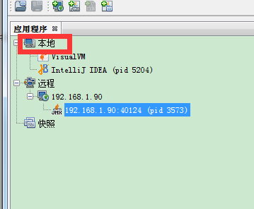
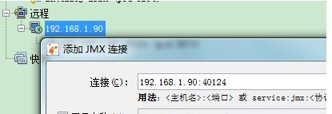

一：本地使用，直接使用。运行c:\Program Files\Java\jdk1.7.0_79\bin\jvisualvm.exe

二：远程连接
这里主要讲jmx连接方案
1：
启动文件如下：
start.sh
java -Dcom.sun.management.jmxremote.port=40124 -Dcom.sun.management.jmxremote.rmi.port=58845 -Dcom.sun.management.jmxremote.ssl=false -Dcom.sun.management.jmxremote.authenticate=false -Djava.rmi.server.hostname=192.168.1.90 -jar test_jmx.jar
解释：
-Dcom.sun.management.jmxremote.port=40124
这个是远程填的端口号，如下

-Dcom.sun.management.jmxremote.rmi.port=58845
这个可以不配置，但是需要把防火墙关掉
-Djava.rmi.server.hostname=192.168.1.90
指定rmi的连接ip地址，如果rmi链接不到（这个就是java服务器的ip地址）
（如果没有关闭防火墙）需要把40124、58845加入到防火墙的开关中去。
查看这个进程jmx启动的随机端口
查找40124端口占用的进程 >netstat -tupln |grep 40124
查看进程号3131占用的信息 lsof -i|grep 3131